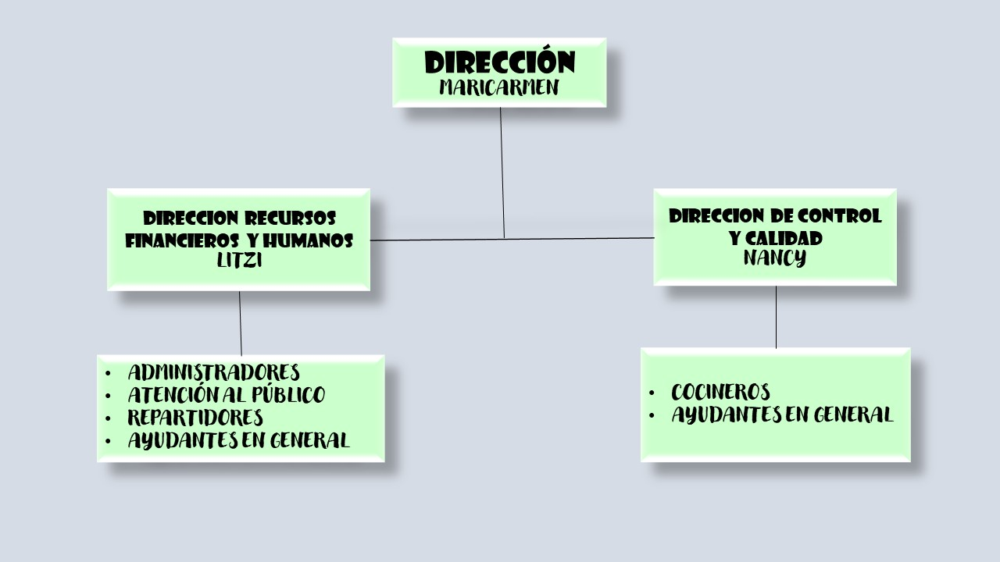

Tener productos de calidad al igual que cumplir las expectativas de los clientes y garantizar procesos eficientes de la producción y en la entrega de nuestros productos.
VISIÓN
Ser una repostería sostenible ampliando la presencia en el mercado, convirtiéndonos en una marca reconocida al implementar nuevos productos, ganando la preferencia del cliente con productos innovadores y de calidad.
VALORES INSTITUCIONALES
Responsabilidad
Honestidad
Respeto
Trabajo en equipo
Compromiso
Innovación
Sustentabilidad
OBJETIVO
Ofrecer productos de alta calidad dándonos a conocer en redes sociales con publicaciones diarias, para incrementar las ventas mensualmente en un 20%, mediante el desarrollo de nuevos productos al menú en plazos de 1 año y medio, dominando el mercado para que el negocio crezca, alcanzando un ingreso mensual de $10,000 para fin de año del 2026.
METAS
Introducir nuevos productos.
Abrir una segunda ubicación en otro municipio de la región.
Convertirse en una repostería reconocida en todo el municipio y agencias aledañas.
ORGANIGRAMA

ESTRATEGIAS DE VENTA
Muestras Gratuitas.
Oferta compra uno y lleva el segundo con un 50% de descuento.
Ofrecer descuento en productos que se lleven por mayoreo.
Buzón de sugerencias.
Hacer temáticas en días festivos.
Ofrecer paquetes de cumpleaños.
MANUAL DE OPERACIONES DEL DIRECCIÓN GENERAL DE LA EMPRESA
Descripción de las Actividades a Realizar
Establecimiento de objetivos estratégicos.
Supervisión general de las operaciones y producción.
Supervisión y autorización de presupuesto y recursos financieros.
Evaluación y optimización de procesos internos.
Coordinación con áreas clave: dirección de control y calidad y recursos humanos.
Representación de la empresa frente a clientes, proveedores y otras partes interesadas.
Toma de decisiones críticas para el crecimiento empresarial.
MANUAL DE OPERACIONES DE DIRECCIÓN DE CONTROL Y CALIDAD DE LA EMPRESA
ACTIVIDADES A REALIZAR:
Supervisar que se sigan las recetas.
Revisar la calidad de los ingredientes.
Cuida la higiene en la cocina.
Revisa cómo se ven los postres.
Prueba los postres.
Organizar el trabajo en la cocina.
Mantener comunicación constante con el equipo.
Ayudar a resolver problemas.
Pensar en cómo mejorar.
MANUAL DE OPERACIONES DE DIRECCIÓN DE RECURSOS HUMANOS DE LA EMPRESA
ACTIVIDADES A REALIZAR:
Planificar las negociaciones y procedimientos para determinar las estructuras salariales o laborales
Organizar los procedimientos de capacitación, promoción, transferencia y despido de personal.
Reclutar y seleccionar personal: Identificar las necesidades de la organización y encontrar a las personas más adecuadas para el puesto.
Contratar y dar de alta a los empleados: Formalizar la incorporación de los nuevos trabajadores
Canalizar a los nuevos empleados con los responsables de cada área de trabajo dentro de la empresa para su capacitación y adaptación.
MANUAL DE OPERACIONES DE DIRECCIÓN DE RECURSOS FINANCIEROS DE LA EMPRESA
ACTIVIDADES A REALIZAR:
Controlar los gastos, Manejar el flujo de caja.
Gestión de solvencia y liquidez, evaluar la capacidad de pago de la empresa para determinar si puede cumplir con sus obligaciones financieras.